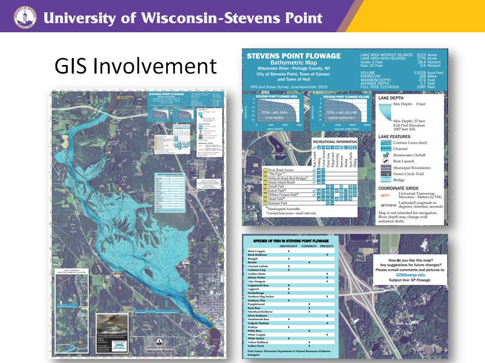
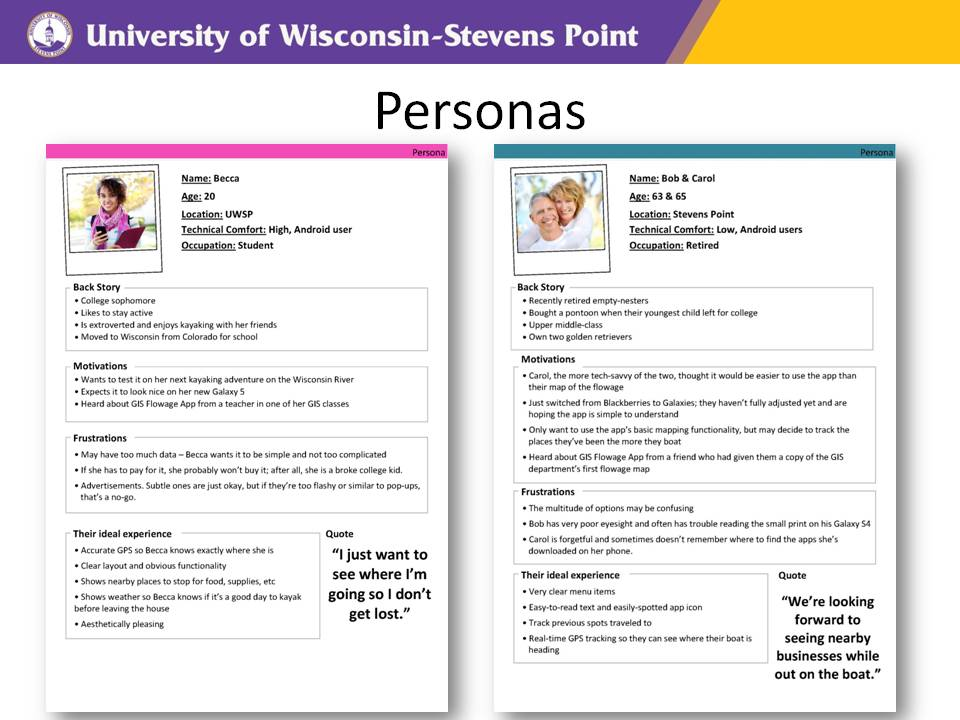
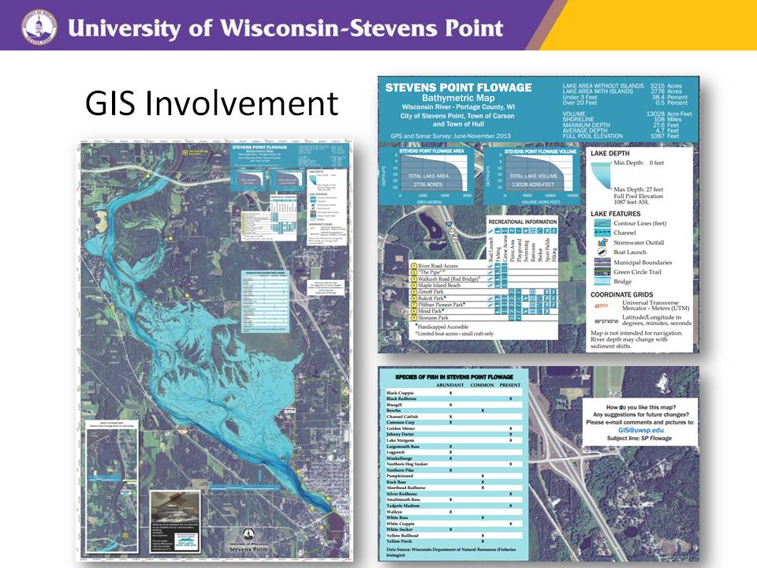
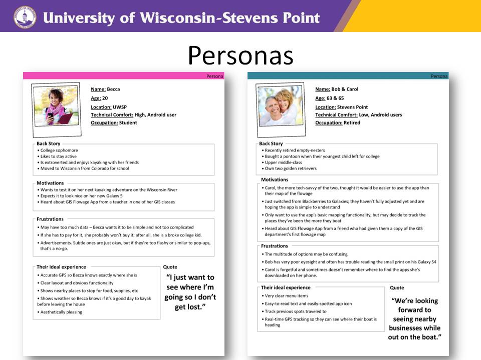

Web and Digital Media Development Projects
 



Wisconsin Waterways Android Application, WDMD 480, UW Stevens Point
I worked on this application for my senior capstone course in the fall of 2014 with two other developers, a designer, and a GIS specialist. This application displays waterways in central Wisconsin with overlays of important information like depth contours and locations of boat landings. The application also features a location service, and a weather service. As we only had one semester to work on this project, we decided to focus on just the android version of this application. We built the application using the ArcGIS for Android SDK. In the process of developing and designing for this application, we conducted a competitive analysis and usability tests, as well as creating mood boards, wireframes, and personas. We used the Agile development framework to keep us on track and to help us meet deadlines throughout the semester. As part of the Agile development process, we presented to our peers every two weeks for a review of what we had accomplished. Upon the completion of the semester, the application was fully functional with the ability to take images, show location of the user, display the maps of waterways and information, and update with weather information every 15 minutes. Due to the long approval process of launching the app with UW-Stevens Point, the app couldn't be released until July of 2015. During that time, another team of students modified the design and added additional functionality to the weather service. I really enjoyed working on this project as I was able to use my knowledge of cartography, GIS, and application development on one project.
E-Commerce & Marketing Strategy for Slow Food Marathon County , WDMD 420, UW Stevens Point
This was a semester long project which I completed with a partner in the fall of 2013. Initially, we conducted research and reviewed the organization using a Strengths, Weaknesses, Opportunities, and Threats Analysis, as well as the 7 C’s of Marketing Framework to make e-marketing recommendations for our client. We met with our client and recommended the use of a Facebook page, a Pinterest Page, and a website in addition to the continued use of a Facebook group page. Specifically, I was responsible for contributing to the research and recommendation process, creating and maintaining the Facebook page for the semester, and creating a website. At the end of the semester, representatives of Slow Food Marathon County fully took over the Facebook page. In building the website, I modified a template from the Slow Food USA organization to fit the needs of the smaller, local branch of Slow Food Marathon County. Prior to this project, I hadn’t worked with a client before. It was an excellent experience. I had already acquired the skills needed to create the Facebook Page and the website from previous classes, but working with a client, a partner, and a limited amount of time created a challenging work environment which closely reflects the web design career field. Additionally, it was my first time arranging web site hosting, and publishing a website. I’ve included a screenshot of the finished website index page.Since the completion of the project in 2013, I worked one more time with Slow Food Marathon County to update the content of their website. The site I developed for them remained in use for one year until a contract renewal was available, at which time they decided to develop a site with SquareSpace for ease of use and a more modern design.


User Centered Design of Franck's Gym Website, WDMD 368,UW Stevens Point
This was a semester long project which I worked on with two other students in the Spring of 2014. The goal of the class was to work with a client and create a user centered website. The design process consisted of completing a competitive review, creating personas, mood boards, concept models, site maps, and wireframes. When the design artifacts were completed, we met with out client to get approval of our design. Once the design was approved, we created a test prototype of the the website and a design brief, and developed a usability testing plan. We used the software program Morae to conduct usability tests on three potential customers of the gym. Once the testing was complete, we wrote a findings report, and continued development of the website. We presented our work to the client at the end of the semester. This particular class had a competitive element in that another team also designed a website for Frank’s Gym that semester. The client then took design elements from both teams to further develop and update his site. I've included images to the left of an example persona and an usability testing prototype site.